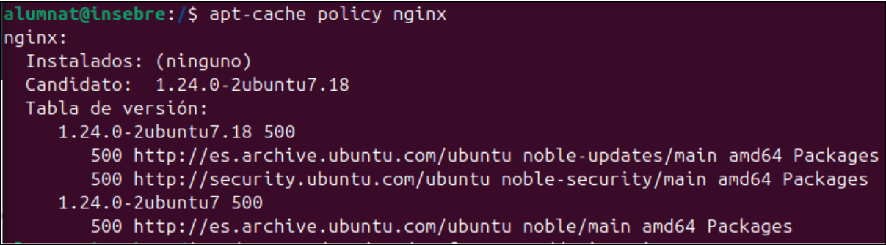
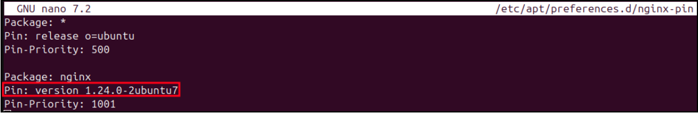
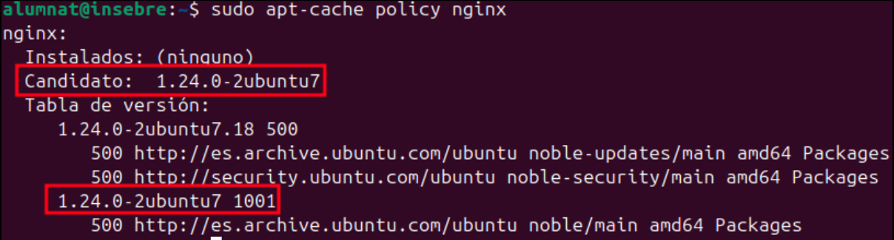
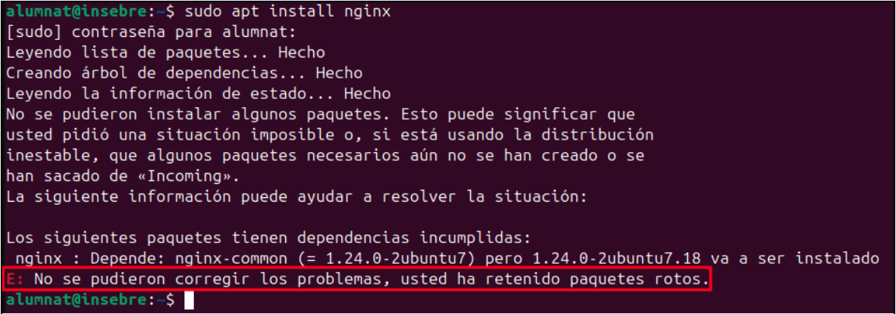

style="color:#64c27b;"> Documentació de la Pràctica: Apt Pinning i Conflicte de Dependències amb Nginx
1. Objectiu de la pràctica
L'objectiu d'aquesta pràctica és forçar el sistema operatiu a utilitzar una versió específica del servidor web Nginx mitjançant la tècnica de fixació de paquets (Apt Pinning), i analitzar com aquesta restricció pot trencar les dependències durant la instal·lació.
2. Desenvolupament pas a pas
Pas 1: Verificació inicial de la política del paquet
Es comença comprovant quina és la política actual d'instal·lació per al paquet nginx amb l'ordre:

Pas 2: Configuració de l'Apt Pinning (Bloqueig de versió)
Es crea i edita un fitxer de preferències d'APT per forçar una versió anterior concreta:
- Ruta del fitxer: /etc/apt/preferences.d/nginx-pin
- Contingut del fitxer:

Pas 3: Verificació de la nova política
Es torna a comprovar l'estat del paquet amb permisos d'administrador:

Resultat: Es confirma que el canvi s'ha aplicat correctament. Ara el Candidat ha passat a ser la versió fixada: 1.24.0-2ubuntu7 amb una prioritat de 1001.
Pas 4: Intent d'instal·lació i error de dependències
S'intenta instal·lar el servidor web amb l'ordre:

Resultat (Error): El procés falla amb el següent missatge d'error de dependències incompletes.